Типы, выражения, условия, циклы и функции
От первой программы до функций, областей видимости и ввода данных.
Первая программа
Функция main — точка входа. Оператор >> читает значение из потока, а << отправляет его в поток вывода. Проверка std::cin позволяет заметить неверный ввод или конец файла.
#include <iostream>
int main() {
int score{};
if (!(std::cin >> score)) {
return 1;
}
std::cout << (score >= 60 ? "pass" : "retry") << '\n';
}Как выбрать тип
boolхранит логическое значение,char— символ или небольшое целое,int— целое,double— число с плавающей точкой. Размерintзависит от платформы. Для точной разрядности есть типы вродеstd::int32_tиз<cstdint>, когда реализация их предоставляет.unsignedсчитает по модулю 2ⁿ. Переполнение знакового целого при вычислении — неопределённое поведение. Смешение знаковых и беззнаковых значений может изменить результат сравнения.42,052,0x2Aи0b101010задают одно число в десятичной, восьмеричной, шестнадцатеричной и двоичной системах.'A'— символ,"A"— массив символов с завершающим нулём,'\n'— перевод строки.- Деление
5 / 2даёт2. Дробный результат можно получить черезstatic_cast<double>(5) / 2. Инициализация фигурными скобками выявляет сужающие преобразования вродеint n{3.5}на этапе компиляции.
Условия, циклы, функции
if выбирает ветку по условию. switch сравнивает целое или перечисление с константами, break завершает ветку. for удобен для диапазона с понятными границами, while — когда следующая итерация зависит от состояния.
Объявление int Square(int x); сообщает компилятору сигнатуру, определение содержит тело. Перегрузки различаются параметрами. Имена видны в своей области видимости, а локальная переменная с тем же именем скрывает внешнюю.
Самопроверка
Что выведет 5 / 2 и почему? Сколько раз отработает тело for (int i = 0; i < 3; ++i)? Что изменится при i <= 3?
Типы данных, идентификаторы, операторы, операторы ветвления, циклы, функции
Code Style
https://github.com/is-itmo-c-25/cpp-coding-guidelines
Встроенные типы данных
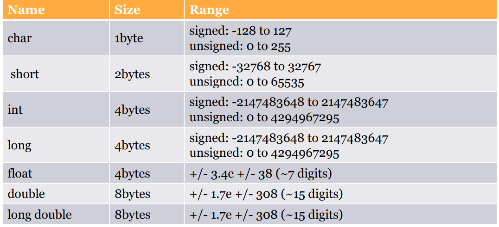
nullptr_t
На распространённых 32- и 64-разрядных платформах int занимает 4 байта. Стандарт допускает другие размеры. На конкретной платформе используйте sizeof(int).
Модификаторы
- signed
- unsigned
signed допускает отрицательные значения.
unsigned хранит неотрицательные значения.
Заголовок <cstdint> предоставляет целые типы фиксированной ширины, если платформа их поддерживает.
std::int8_t — знаковый 8-битный тип, std::uint8_t — беззнаковый 8-битный тип.
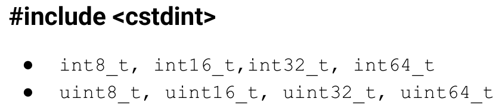
int b = 0242; — восьмеричный литерал.
int c = 0x16; — шестнадцатеричный литерал.
int z = 0b101; — двоичный литерал.
В дополнительном коде старший бит отрицательного значения равен 1. Чтобы получить запись числа −x в фиксированной разрядности, инвертируйте биты x и прибавьте 1.
Сложение и вычитание обычно имеют сопоставимую стоимость. Выбирайте операцию по смыслу и проверяйте производительность измерениями.
Соглашение о стиле. Объявляйте каждую переменную на своей строке.
Целочисленные литералы
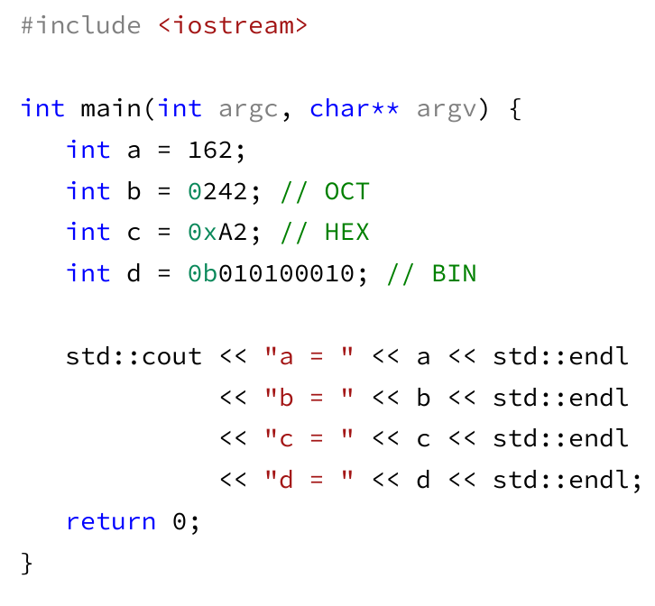
Вещественные литералы
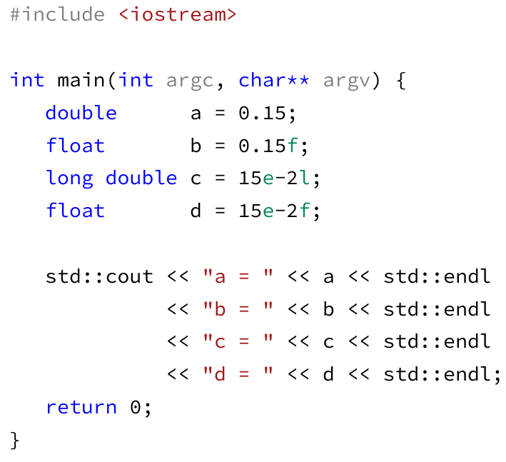
Представление чисел в памяти
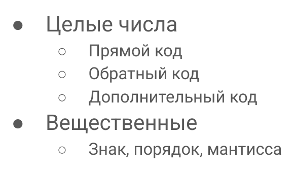
Управляющие последовательности и символьные литералы
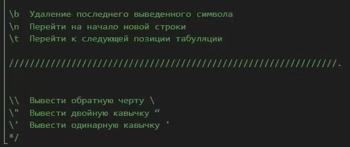
Строковые литералы
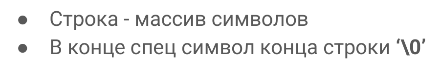
Enum (перечислимый тип)
- Перечисляемый тип
Перечисление и структура
Enum (перечисление) — это пользовательский тип данных, который представляет собой набор именованных констант, тогда как struct (структура) — это пользовательский тип данных, который может содержать несколько полей разных типов данных одновременно. Ключевое отличие заключается в назначении: enum используется для выбора из фиксированного набора взаимоисключающих вариантов, а struct — для группировки нескольких связанных полей в одну сущность
#include <iostream>
enum hello {
OFF = 0,
ON = 1,
SLEEP = -1
};
int main(){
std::cout << hello::OFF;
}#include <iostream>
enum helloPC {
НОРМ,
ГРЕЮСЬ,
ГОРЮ
};
int main() {
std::cout << helloPC::ГРЕЮСЬ;
}Пример ошибки компиляции. В перечислении каждый элемент должен иметь имя. Для явного значения используйте запись вида ГОРЮ = 15.
#include <iostream>
enum helloPC {
НОРМ,
ГРЕЮСЬ,
15 // WARNING!!!!!
};
int main() {
std::cout << helloPC::ГРЕЮСЬ;
}Объявления и определения функций
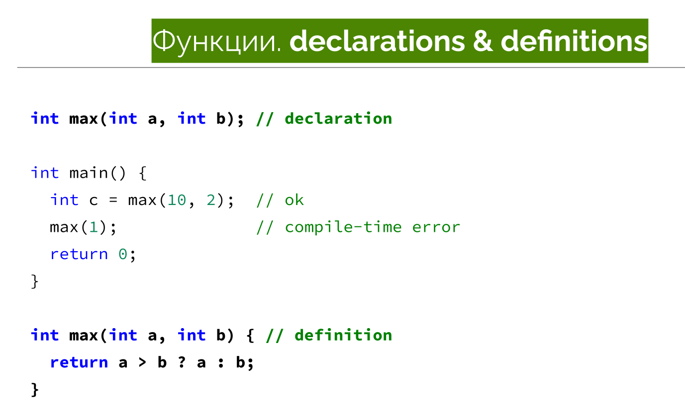
Преобразования типов
Неявные преобразования ▫ Если какой-либо из операндов принадлежит типу long double, то и другой приводится к long double. ▫ В противном случае, если какой-либо из операндов принадлежит типу double, то и другой приводится к double. ▫ В противном случае, если какой-либо из операндов принадлежит типу float, то и другой приводится к float. ▫ В противном случае операнды типов char и short приводятся к int. ▫ И наконец, если один из операндов типа long, то и другой приводится к long. • Явное преобразование (c-style cast) (тип) переменная
sizeof
#include <iostream>
int main(){
std::cout << sizeof(int);
}
// output 4Символы в с++ и что они значат
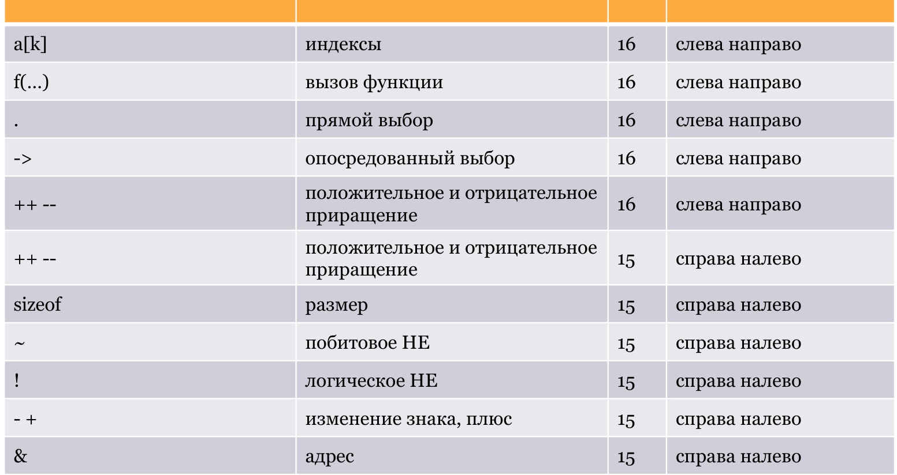
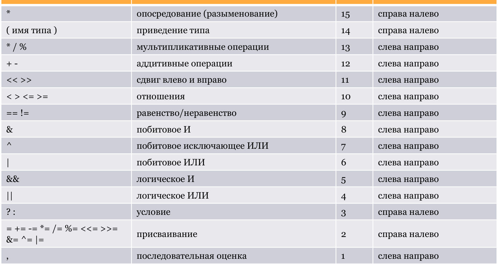
Функции
#include <iostream>
void foo(){
std::cout << "Hello foo" << '\n';
}
int Sum(int a, int b){
int result = a+b;
return result;
}
int main(){
foo();
int c = Sum(1, 1);
std::cout << c;
}#include <iostream>
void foo(){
std::cout << "Hello foo" << '\n';
}
int Sum(int a, int b){
return a+b;
}
int main(){
foo();
std:: cout << Sum(1, 1);
}Передача массива в функцию
#include <iostream>
void Array(int arr[], const int size){
srand(time(NULL));
int random = rand()%10;
for (int i = 0; i < size; i++) {
arr[i] = random;
}
}
void PrintArr(int arr[], const int size) {
for (int i = 0; i < size; i++){
std::cout << arr[i];
}
}
int main(){
const int size = 10;
int arr[size];
Array(arr, size);
PrintArr(arr, size);
}Предварительное объявление функции
#include <iostream>
void Array(int arr[], const int size);
void PrintArr(int arr[], const int size);
int main(){
const int size = 10;
int arr[size];
Array(arr, size);
PrintArr(arr, size);
}
void Array(int arr[], const int size){
srand(time(NULL));
int random = rand();
for (int i = 0; i < size; i++) {
arr[i] = random;
}
}
void PrintArr(int arr[], const int size) {
for (int i = 0; i < size; i++){
std::cout << arr[i];
}
}Сокрытие имён внешней области видимости
Затенение внешних переменных (или переменная-затенение) — это ситуация в программировании, когда переменная во внутренней области видимости объявляется с тем же именем, что и переменная во внешней, глобальной области видимости
Тернарный оператор
b_5 = (x > 10) ? (10) : (5);
1 условие 2 и 3 да или нет
Примеры управляющих конструкций
sizeof(int) - размер инта
enum можно засунуть в switch
#include <iostream>
int main() {
enum Color {
Red,
Green,
Blue
};
Color color = Color::Red;
switch (color)
{
case Color::Red:
std::cout << "Ok"<< '\n';
break;
default:
break;
}
}Функция
#include <iostream>
int blala(u_int64_t a) {
int result;
result = a * a;
return result;
}
int main () {
std::cout << blala(7) << "\n";
}Рекурсия факториала
#include <iostream>
int factorial(u_int64_t n) {
if (n == 0){
return 1;
}
return n * factorial(n - 1);
}
int main () {
std::cout << factorial(3) << "\n";
}Указатели и место в памяти
#include <iostream>
int main () {
int x = 10;
int* x_ptr = &x;
std::cout << *x_ptr << " " << &x << '\n';
}&x - место в памяти для переменной x *x_ptr - указатель на x который выодит число на экран
#include <iostream>
int main () {
int arr[10];
std::cout << &arr << '\n';
}указатель на массив хранит адрес его первого символа
Каков размер указателя? На многих 64-разрядных платформах он равен 8 байтам. Размер зависит от платформы и типа указателя.
Вложенные циклы
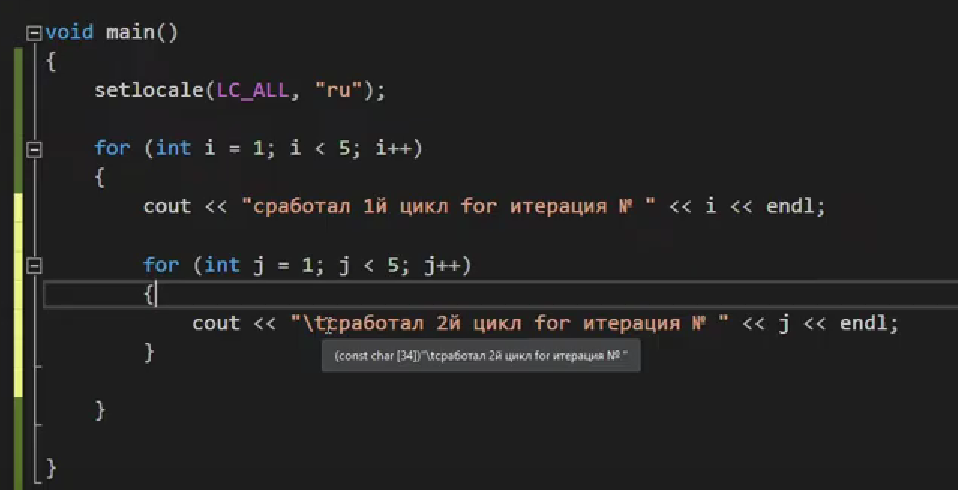
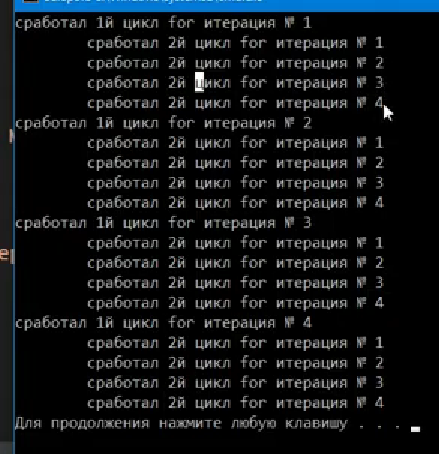